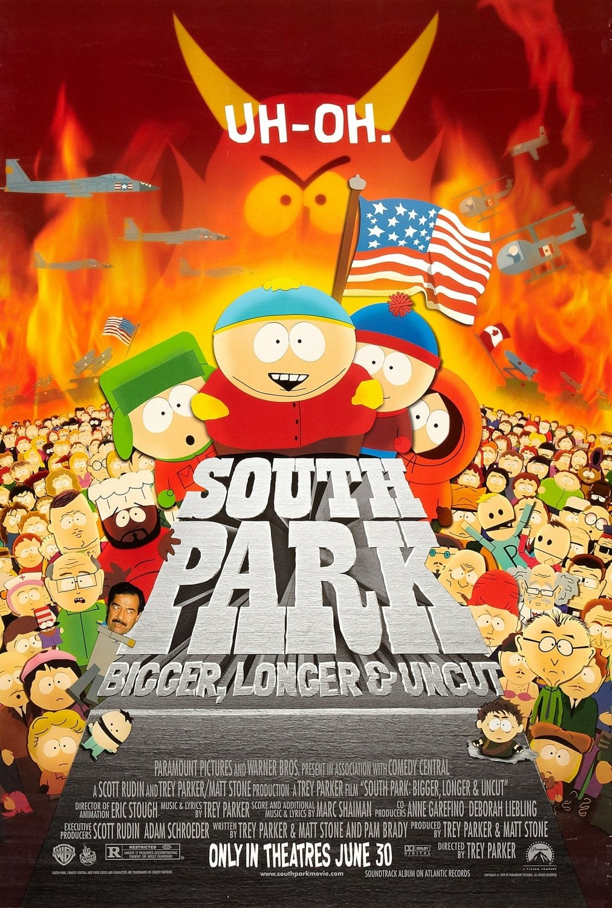
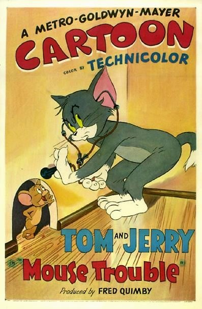
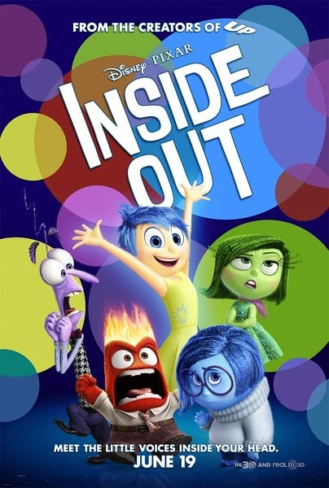
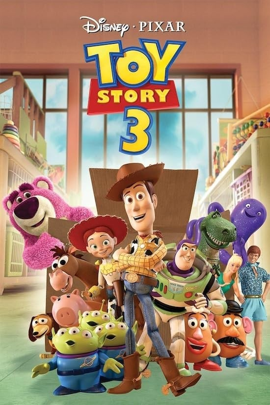
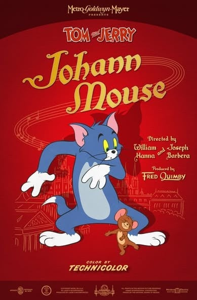
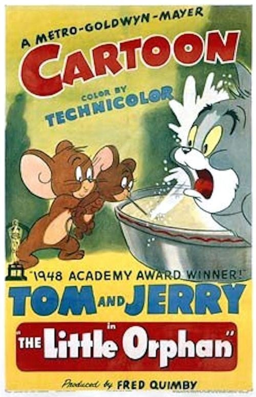
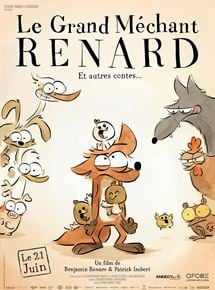

7.6「南方公园剧场版」（1999）是一部剧场版，由Trey Parker执导，制作Comedy Central Films，类型包括搞笑、音乐、喜剧，评分7.6，在本站出现在5份片单中，例如高分美漫与动画电影、高分动画剧场版推荐、必看搞笑动漫。页面只做片单对照，不提供播放。南方公园剧场版是美国系列动画剧《南方公园》的电影版本，发行于1999年，并于同年获得奥斯卡金像奖最佳喜剧/音乐剧电影奖提名。该影片融合了大量迪士尼动画电影及百老汇歌剧的表演形式，并通过自身故事针砭时政，极尽恶搞、讽刺之能事。影片中12首歌曲。
按共享片单数排序，用来找和「南方公园剧场版」一起出现的高分动漫。

7.6
7.5
7.6
7.7
7.7
7.5